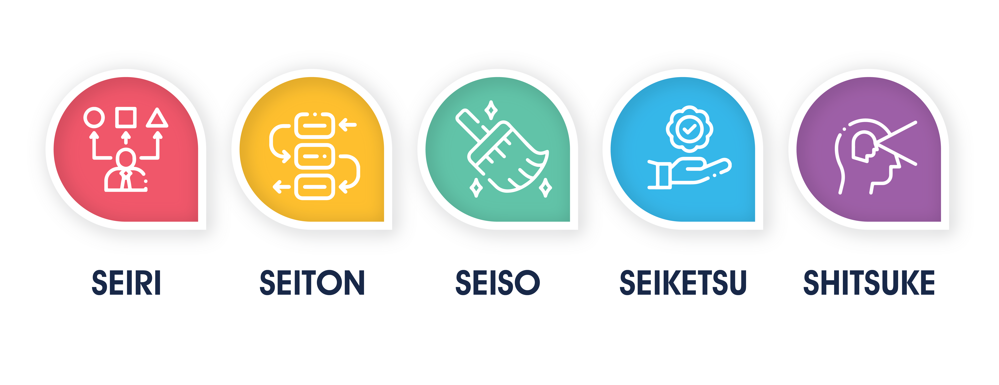

La competitividad en el mundo empresarial actual exige no solo productos de calidad, sino también procesos eficientes que minimicen desperdicios y optimicen recursos. En este contexto, la metodología de las 5S ha ganado popularidad como una herramienta fundamental para mejorar la organización y la productividad en el lugar de trabajo. Originaria de Japón, esta técnica se basa en cinco principios que buscan crear un entorno laboral más eficiente y ordenado.
Aplicaciones de las 5S

- Eliminar residuos
- Mejorar el flujo de trabajo
- Reducir procesos innecesarios
- Mejorar las condiciones laborales
- Fomentar la moral del personal
- Reducir gastos de tiempo y energía
- Minimizar riesgos de accidentes y problemas sanitarios
- Aumentar la calidad de la producción
La metodología 5S no solo mejora las relaciones interpersonales, sino que también ayuda a gestionar crisis de manera efectiva. Esta filosofía de trabajo, arraigada en la cultura japonesa, busca dar orden y sentido a las dinámicas laborales, abordando situaciones de desorganización.
Función de las 5S
- Seiri: El primer paso, Seiri o "Clasificar", consiste en identificar y separar lo necesario de lo innecesario. Este proceso implica revisar el espacio de trabajo y deshacerse de elementos que no aportan valor. La eliminación de artículos innecesarios no solo libera espacio físico, sino que también reduce la carga mental de los empleados, permitiéndoles concentrarse en tareas más relevantes.
- Seiton: El segundo paso, Seiton o "Ordenar", se centra en organizar de manera eficiente los elementos que han sido clasificados como necesarios. Esto implica establecer un lugar específico para cada objeto y asegurarse de que todos los empleados conozcan este sistema. Un espacio de trabajo ordenado no solo facilita la búsqueda de herramientas y materiales, sino que también minimiza el riesgo de accidentes y mejora el flujo de trabajo.
- Seiso: El tercer paso, Seiso o "Limpiar", va más allá de la simple limpieza física; se trata de fomentar un ambiente de trabajo que promueva la higiene y la seguridad. Mantener el área de trabajo limpia contribuye a la salud de los empleados y refuerza el compromiso de la organización con la calidad. Además, un entorno limpio ayuda a identificar problemas potenciales antes de que se conviertan en grandes inconvenientes.
- Seiketsu: El cuarto paso, Seiketsu o "Estandarizar", implica la creación de estándares que garanticen la continuidad de las tres primeras S. Esto puede incluir la implementación de procedimientos operativos estándar y la capacitación del personal. Al establecer normas claras, se asegura que todos los miembros del equipo sigan las prácticas recomendadas, lo que resulta en una mayor coherencia y eficiencia en las operaciones.
- Shitsuke: Finalmente, el quinto paso, Shitsuke o "Sostener", se centra en fomentar la disciplina y el compromiso de todos los empleados con el proceso de las 5S. Esto requiere un liderazgo fuerte y un enfoque constante en la mejora continua. La sostenibilidad de las 5S depende de la cultura organizacional, donde cada miembro del equipo asume la responsabilidad de mantener un entorno de trabajo eficiente y ordenado.